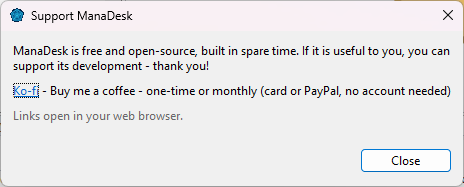

ManaDesk is free, without ads, and made on free time. If it is useful to you, you can support its development.
Choose . The dialog lists the ways to support the project (for example Ko-fi); the links open in your web browser. The same button appears at the end of a card database update.

Or go straight to Ko-fi: ko-fi.com/bkurler_manadesk — buy me a coffee, one-time or monthly (card or PayPal, no account needed).
Other ways to help, which cost nothing:
Thank you!